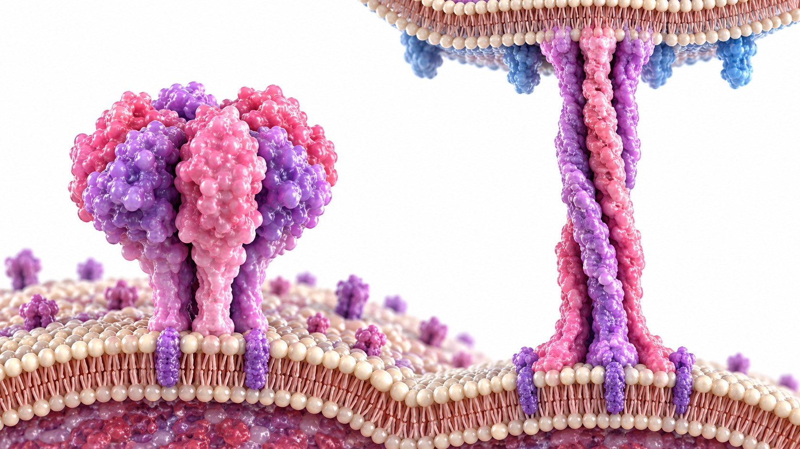

CLINICAL LEARNING · 아산 28회
RSV 백신 근거 읽기
평가변수 · 지속효과 · 길랭–바레증후군
Efficacy · Effectiveness · Immunogenicity

세포 융합 이전 형태의 중요한 중화 항원 부위

세 백신의 성분을 같은 단위로 정리한다
| 백신 | 항원·용량 | 면역증강제·플랫폼 |
|---|---|---|
| Arexvy | RSV-A preF 단백항원 120 μg | AS01E; 재조합 단백질 |
| Abrysvo | RSV-A 60 μg + RSV-B 60 μg | 비면역증강 2가 재조합 단백질 |
| mRESVIA | RSV-A preF를 암호화하는 mRNA-1345 50 μg | 별도 면역증강제 없음; mRNA·지질나노입자의 adjuvant-like effect |
허가 대상의 범위와 실제 접종 권고는 같은 표가 아니다
Arexvy의 3상 위약 대조 임상시험
같은 연구라도 질환 정의에 따라 수치가 달라진다
AReSVi-006의 별도 결과
강의 교재의 초기 효능 비교표
| 백신·연구 | RSV 하기도 질환 | 다른 평가변수 |
|---|---|---|
| Arexvy · AReSVi-006 | 82.6% | 중증 하기도 94.1%; 급성 호흡기 감염 71.7% |
| Abrysvo · RENOIR | 85.7%; 증상 ≥2개 기준 66.7% | 급성 호흡기 감염 62.1% |
| mRESVIA · ConquerRSV | 82.4% (교재 초기 비교표) | 급성 호흡기 감염 68.4% |
AReSVi-006의 시즌 2 전 재무작위 배정
각 군을 위약과 비교한 누적 결과
AReSVi-006의 1회 접종 및 재접종 추적
| 군 | 시즌 1 | 시즌 2 | 시즌 3 |
|---|---|---|---|
| 1회 접종 | 82.6% | 56.1% | 48.0% |
| 재접종 | 시즌 1 접종 후 분리 | 55.9% | 68.4% |
시즌별 하기도 질환 효능은 누적 3시즌 값과 다르다
강의 장기 예방효과 표
| 제품 | 추적 방식 | 강의 제시값 |
|---|---|---|
| Arexvy | 시즌별 · 3시즌 | 82.6% → 56.1% → 48.0%; 2시즌 누적 67.2%, 3시즌 62.9% |
| Abrysvo | 시즌별 · 2시즌 | 85.7% → 77.8%; 증상 ≥2개 기준 66.7% → 55.7%; 누적 81.5% (60%) |
| mRESVIA | 달력 추적 · 18–24개월 | 3.7개월 83.7%, 8.6개월 62.5%, 12개월 56%; 12–24개월 30%, 24개월 누적 47.4% |
VISION은 검사 양성과 음성의 접종력을 비교했다
서로 다른 임상 결과의 실제 예방 효과
60세 이상 성인, 두 시즌을 추적한 전자의무기록 연구
추적기간·결과·설계가 다른 관찰 연구들
| 연구망 | 평가 결과·설계 | 시즌·시간별 효과 |
|---|---|---|
| VISION | 입원 · Test-negative | 4–59일 83%, 60–119일 78%, 120–179일 67%, 180–364일 43%; 365–571일 42% |
| IVY | 입원 · Test-negative | 시즌 1 69% (52–81), 시즌 2 48% (27–63) |
| KPSC | 하기도 질환 입원/응급실 · Test-negative | 시즌 1 89% (52–97), 시즌 2 76% (48–89) |
같은 연구 안에서도 결과별 값을 유지한다
| 연구 | 첫 기간: 감염 / ER / 입원 | 이후 기간: 감염 / ER / 입원 |
|---|---|---|
| US VA · Target trial emulation | 시즌 1: 78.1% / 78.7% / 80.3% | 시즌 2: 59.4% / 60.5% / 57.3% |
| Epic · 관찰 코호트 | 4개월: 71% / 71% / 73% | 19개월: 40% / 46% / 44% |
길랭–바레증후군(Guillain–Barré syndrome)
강의에서 제시한 attributable risk
교재가 제시한 수치의 분모와 의미를 유지한다
2시즌 · 백만 dose당 예방 결과와 추정구간
| 집단 | 입원 | 중환자실 입원 | 사망 |
|---|---|---|---|
| ≥75세 | 4,283 (2,235–6,957) | 630 (329–1,023) | 605 (202–1,263) |
| 60–74세 + 만성질환 ≥1 | 2,839 (1,478–4,699) | 647 (337–1,071) | 246 (83–436) |
| 60–74세 만성질환 없음 | 456 (247–731) | 72 (39–115) | 39 (16–71) |
2시즌 · 백만 dose당 예방 결과와 추정구간
| 집단 | 입원 | 중환자실 입원 | 사망 |
|---|---|---|---|
| ≥75세 | 3,817 (1,927–6,288) | 561 (283–924) | 539 (190–1,106) |
| 60–74세 + 만성질환 ≥1 | 2,530 (1,363–4,224) | 577 (311–963) | 219 (74–399) |
| 60–74세 만성질환 없음 | 406 (219–679) | 64 (34–107) | 35 (14–63) |
강의 권고와 최상호 연자 Q&A를 구분해 정리한다
평가변수 · 지속효과 · 길랭–바레증후군